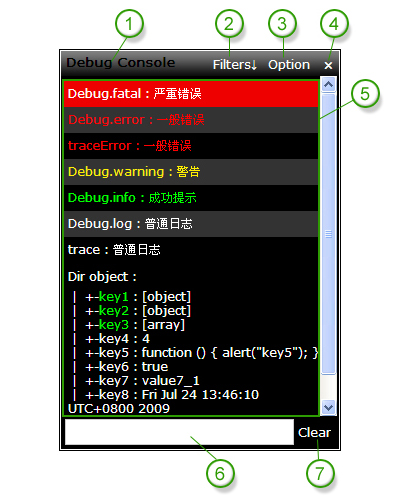
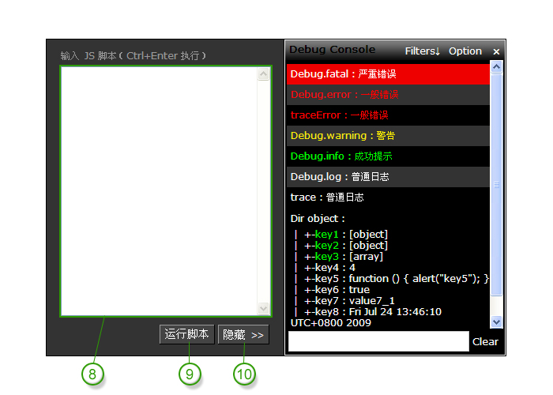
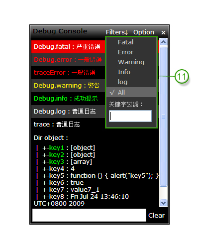
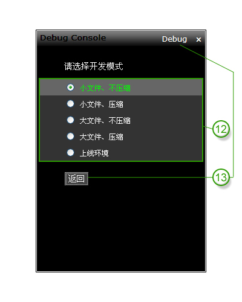

Debug Console 使用说明
L.Ming @ 2009.07.24
目录
简要介绍
作为一个以 Javascript 开发为主导的 RIA 工程师，在我们的日常的学习或工作中，每天都免不了和 Javascript 打交道。
如果做进行一些简单的调试：我们也许会采用 alert()，它可以中断 Javascript 的执行，让我们实时了解当前 Javascript 代码是否按照既定流程执行。
不过 alert() 也会让人苦恼，例如要测试一个循环，我们可能就要面对 N 次的 alert 弹出信息，这往往会让调试者抓狂；并且调试信息无法查阅历史，需要有好记性才能记住刚才弹出的那么多信息，事实上对绝大多数人来说，这是一件头疼的事情。
Debug Console 就是用于解决这个问题，将当前页面的调试信息输出到一个 Javascript 生成 HTML 控制台中，既不影响程序执行，还能方便查找各种调试信息。Debug Console 有丰富的图形界面，支持快捷键和命令操作。
Debug Console 包括两个 JS 文件：debug_base.js 和 debug.js。
debug_base.js 定义了用户的入口函数，及各种色彩配置等信息。它只将用户数据缓存起来，不提供任何显示图形界面。
debug.js 给 document 绑定了 onkeydown 事件，在用户按下 Alt+~ 的时候显示或隐藏 Debug Console 图形界面。
浏览器兼容：
- Internet Explorer 6+
- Firefox 2+
- Safari 3+
- Opera 9.23
- Chrome
目前支持的调用方法：
Debug.fatal(String infomation)
以红底白字显示调试信息，表示严重错误
Debug.error(String infomation)
以黑底红字显示调试信息，表示一般错误
Debug.warning(String infomation)
以黑底黄字显示调试信息，表示警告
Debug.info(String infomation)
以黑底绿字显示调试信息，表示成功
Debug.log(String infomation)
以黑底白字显示调试信息，表示普通日志
Debug.dir(JsonObject|Array infomation)
打印 JSON 对象的结构，可展开的子节点绿色显示
trace(String infomation)
Debug.log 的别名，为了兼容历史程序
traceError(String infomation)
Debug.error 的别名，为了兼容历史程序
部署方法
在执行 Debug Console 提供的方法之前，部署如下两个 JS
<script type="text/javascript" src="debug_base.js" charset="utf-8"></script> <script type="text/javascript" src="debug.js" charset="utf-8"></script>
请注意文件的 charset 一定要设置成 UTF-8。
当然，你也可以只部署 debug_base.js，在必要的时候才引入 debug.js 来显示信息。因为按键绑定是在 debug.js 里完成的，因此一定要加载它才能看到图形界面。
快捷键、界面
快捷键：
Alt+~ 显示/隐藏 Debug Console 图形界面
Ctrl+~ 如果图形界面展开，就激活命令输入框
注：在 Opera 下 alt+~ 用 Ctrl+4 代替，Ctrl+~ 用 Ctrl+5 代替
界面各功能点已经用数字标示，请看图片下的说明文字。

图一、基本界面
1
Debug Console 标题栏，拖动尚未开启
2
显示/隐藏过滤器菜单（见图三）
3
显示开发模式选择界面（见图四。命令:o）
4
隐藏 Debug Console 界面
5
Debug Console 调试信息显示区域
6
Debug Console 命令输入框，可以在这里输入命令操作各种功能，也可以高亮查找指定的字符
7
清空 Debug Console 调试信息显示区域的所有调试信息，这里并不会清除缓存数据（命令:c）

图二、扩展界面，包括脚本运行面板（用命令 :on 打开此面板，:off 关闭此面板）
8
Javascript 脚本输入区域，Ctrl+Enter 快捷键执行脚本
9
执行上面文本框中的 Javascript 脚本
10
隐藏 脚本运行面板（命令:off）

图三、过滤器菜单
11
过滤器菜单，可以让调试信息区域只显示 Fatal、Error、Warning、Info、Log、All 任意一级的调试信息
或设置过滤关键字，通过 Cookie 记录当前的过滤级别和关键字
或设置过滤关键字，通过 Cookie 记录当前的过滤级别和关键字

图四、开发模式选择界面
12
选择用户当前的开发模式
13
关闭开发模式选择模板，返回调试界面
命令参考
| 命令 | 说明 |
|---|---|
| :f 或 :fatal | 切换到 fatal 过滤器 |
| :e 或 :error | 切换到 error 过滤器 |
| :w 或 :warning | 切换到 warning 过滤器 |
| :i 或 :info | 切换到 info 过滤器 |
| :l 或 :log | 切换到 log 过滤器 |
| :a 或 :all | 切换到 all 过滤器 |
| :k [Keyword] 或 :key [Keyword] |
设置过滤器关键字，控制台将只显示包含关键字的信息。 Keyword 表示你要设置的过滤关键字；不带 Kewword 表示清空关键字设置。 |
| :o 或 :option | 打开 Option 面板，事实上没什么用，就是用来从面板上查看当前是那种模式 |
| :1 或 :mode1 | 切换到开发模式 1 |
| :2 或 :mode2 | 切换到开发模式 3 |
| :3 或 :mode3 | 切换到开发模式 3 |
| :4 或 :mode4 | 切换到开发模式 4 |
| :5 或 :mode5 | 切换到开发模式 5 |
| :m 或 :mode | 查看当前是哪种开发模式 |
| :c 或 :cls 或 :clear | 清空控制台 |
| :on | 打开 JS 运行框 |
| :off | 关闭 JS 运行框 |
| Keyword | 查找并高亮字符串；要查找冒号开始的，请将冒号转义 \:。Keyword 表示你要查找的关键字。 |
| ? 或 :h 或 :help | 获取命令说明 |